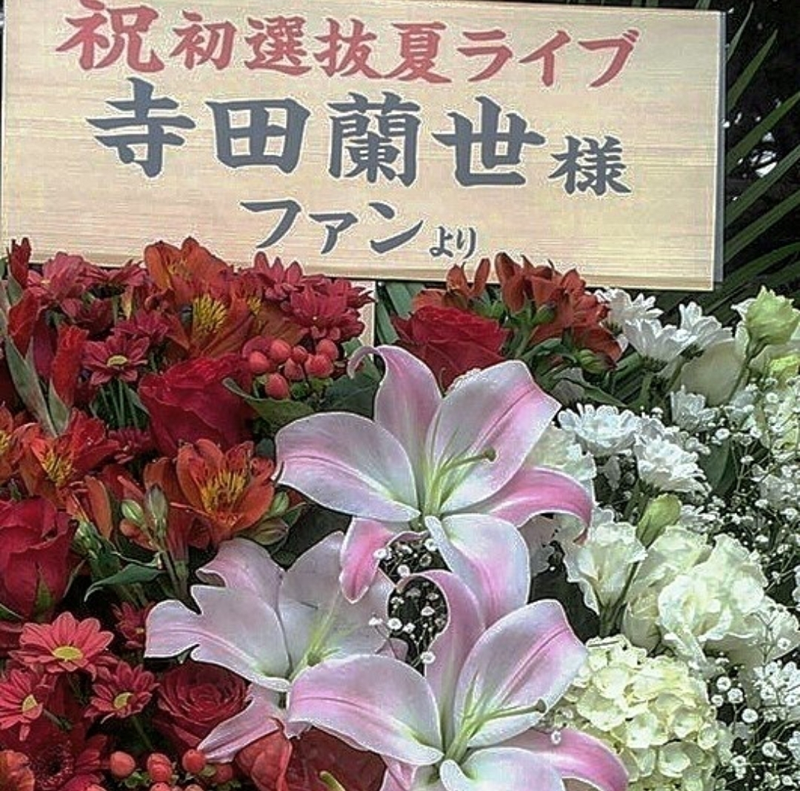

2017/0805SatmeltKAWAIIFASHIONBOOKさんこの事については書きます、すごく嬉しかったですこれからも私のスタイルを貫きます宜しくお願い致します！
どう伝えればいいか文にするのは難しく遅くなりました。
よかったら読んで下さい。
私には登れる力があると思われたから
ここに連れて来られたんだと思います。
他の人じゃ出来無いからだと思います。
でも、これからの私
今まで必死に我武者羅に
歩んできた道
考えれば考える程
言葉では表せないものがありました。
第一に一緒に目標に向かって歩んでくれている
ファンの人の気持ちを考えると胸が痛くなりました。
壊れる寸前だとしても
己を信じないと
付いて来て下さる
一緒に進んでくれている
ファンで居てくれる方の為にも
今までの自分の為にも
これからの自分の為にも
私には今までの歩みがあるから大丈夫だと信じてます
頑張ってる人に「頑張れ」って声は優しさにはならないかもしれません。
でも、「頑張って」欲しいって言われるって事は
「期待」されてる証拠
その人に思い入れがあるから掛ける言葉だと
今回学びました。
何も思わない人に
この言葉はかけない。
少し前の私は
もっと悪い方向に
ネガティブでしたが
周りの人が
プラスな声を沢山かけてくれるようになり
いい意味で少しずつ
自分を認めてあげれるようになりました
これは、私がしっかり真っ直ぐ歩いてきた何よりの証拠です
今シングルはアンダーでイベントやアルバムがあるそうなので
乃木坂46の歴史に名を刻む今までのアンダーの中で最も大切な期間だと思います。
そのタイミング
意味があってここに居ろと言われたんだと思っています。
でも、もちろん
納得してませんよ。
できません。
私が1番納得できません。
正直に物事に当たっていきたいです。
それって凄く大変です。
もっと利口な生き方もあると思うんです。
でも、私は自分の考え方、思考、想いを大切にしたいです。
自分でも大変な道選んでるなとか
なんて、不器用なんだって悩む事もたくさんありましたが
私の気持ちに賛成してくださるファンの方からいる限り
私は強く気持ちを持っていなきゃいけないと思いました。
一緒に今シングルは
駆け上がりたいです。
過去決まった事は変えられないから
近い未来を変えたい
やっぱり私は常に上に居たい人間です。
絶対、
後悔させてやりましょう
流されるのでなく
自分の意見、思いはしっかり言える人でいたいです
そしたら皆で変えられる
変わる未来ってあると思う
少しでも何か思う事があるなら
ここで折れるのは凄く簡単です
でも折れたら
逃げたら
すべての努力が 水の泡
今回が 最終関門
試されてると思い
今まで通り
気取らず
飾らず
力強く
前向きに
一直線目指して
歩いていきます
このシングルで
皆さんと一緒に
見せつけましょう
色んな意味で楽しい夏にしましょうね

Meltさん！
またブログ書きます!

いつもお花ありがとう
ございます！
お花大好きだから嬉しいです!
衣装ケースの中へ

アルバム個別握手会
ありがとうございました！
ブログ遅くなってごめんなさい
ファンの皆さんと
自分の気持ちって
共有しあってるんだなと思いました
これからも
変わらぬ関係で！
衣装は新鮮ですよね

外で撮影
風が強く前髪が
手に持っているのはフランクフルトです！
自分に満足、納得するのは
きっと私の人生が終わるとき
これで良かったんだって
最後に
笑える生き方を
今は日々追い求めていたいです。
寺田蘭世
乃木坂46
2017/08/05 17:00
コメント(1172)
らんぜ
蘭世かわいい
応援してる！
らんぜー！あいたいよー！
イケちゃん
イケちゃん
らんぜ愛がとまらんぜー！
おはようございます、こんにちは、こんばんは！
先日、18枚目の選抜発表がありましたね。
1人の蘭世ファンとして、絶対選抜に入っているだろう、と思って観てたので、正直すごく驚いたし、最近番組出演も増えていただけにすごく残念でした。きっと蘭世も同じ気持ちだったと思います。悔しかったんじゃないかなと思ってます。でもその気持ちはとても大事な事です。悔しいって思えるから、次に向けて頑張ろうって気持ちになれるんです。人生楽しい事だけで終わる人なんていません。苦しい事、辛い事、たくさんあると思います。苦難の中で人は成長するものです。頑張って入れば結果はついてきます。だから前向きに捉えてください。自分自身成長するチャンスです。番組での発表の時の表情、感動しました。本当にいい表情でした。蘭世なら絶対できる。何周りも成長した姿期待してます！
乃木坂のファンになった時から、寺田蘭世さんは僕のイチ推しです。いつも元気をくれてありがとう！これからもずっとずっと大好きです！
らんぜのいきおいとまらんぜー！
センターになる夢、絶対に忘れないで下さい。蘭世ならなれます。そう信じてます。
がんばれ蘭世！
おはようございます、こんにちは、こんばんは！
先日、18枚目の選抜発表がありましたね。
1人の蘭世ファンとして、絶対選抜に入っているだろう、と思って観てたので、正直すごく驚いたし、最近番組出演も増えていただけにすごく残念でした。きっと蘭世も同じ気持ちだったと思います。悔しかったんじゃないかなと思ってます。でもその気持ちはとても大事な事です。悔しいって思えるから、次に向けて頑張ろうって気持ちになれるんです。人生楽しい事だけで終わる人なんていません。苦しい事、辛い事、たくさんあると思います。苦難の中で人は成長するものです。頑張って入れば結果はついてきます。だから前向きに捉えてください。自分自身成長するチャンスです。番組での発表の時の表情、感動しました。本当にいい表情でした。蘭世なら絶対できる。何周りも成長した姿期待してます！
乃木坂のファンになった時から、寺田蘭世さんは僕のイチ推しです。いつも元気をくれてありがとう！これからもずっとずっと大好きです！
らんぜのいきおいとまらんぜー！
センターになる夢、絶対に忘れないで下さい。蘭世ならなれます。そう信じてます。
がんばれ蘭世！
らんぜ！ブログ更新本当にありがとう！！
いろんな思いとかあったと思うけど
こうやって言ってくれてすごく嬉しいよ
またこれからもよろしくね
翻訳してからまた書きます
ユン
いろんな思いとかあったと思うけど
こうやって言ってくれてすごく嬉しいよ
またこれからもよろしくね
翻訳してからまた書きます
ユン
タイトルがめちゃ長くなってる笑笑
ブログ更新ありがとうヽ(｡･ω･｡)ﾉ
蘭世ブログありがとう♡
ほんとにかわいい！
ほんとにかわいい！
蘭世！！！！！！！！
頑張ってるのはわかってるよ！！！！！！！！
その上でまだまだ上を目指す気持ち持ち続けて一緒に頑張ろうね！
頑張ってるのはわかってるよ！！！！！！！！
その上でまだまだ上を目指す気持ち持ち続けて一緒に頑張ろうね！
マジで応援しとる！！！
うおぉぉあぉおまぉおおおぉおぉぉぉお！！！
うおぉぉあぉおまぉおおおぉおぉぉぉお！！！
蘭世ちゃんー！ブログ更新ありがとう！五月から握手会行ってないからな蘭世ちゃん！また行きまーす！
ブログ更新ありがとう！
全握の幕張行くのでまたよろしくお願いします！
また次回のブログ楽しみにしてます！
蘭世の勢いとまらんぜ！
全握の幕張行くのでまたよろしくお願いします！
また次回のブログ楽しみにしてます！
蘭世の勢いとまらんぜ！
蘭世ブログ更新ありがとう！
色々考えることはあるよね…
大変だと思うけどがんばって！！
色々考えることはあるよね…
大変だと思うけどがんばって！！
蘭世のことずっと応援してるからね
一緒に頑張ろうね！！！
一緒に頑張ろうね！！！
ブログ更新ありがとう
これからも前向きに登っていこうねセンターになるまで応援してます。
したっけね
これからも前向きに登っていこうねセンターになるまで応援してます。
したっけね
蘭世これからも応援していくね！
お仕事お疲れ様です！
18thシングル期間はまるまるイベントに行けないけど応援してるで！
受験頑張りますd('∀'*)
あつき
18thシングル期間はまるまるイベントに行けないけど応援してるで！
受験頑張りますd('∀'*)
あつき
蘭世が今頑張ってるって思ったら俺もどんな事でも頑張れる。
応援してます！
アンダラもアルバムも、俺らが盛り上げます！
アンダラもアルバムも、俺らが盛り上げます！
蘭世かっこよすぎ！
蘭世の言葉が胸に響いた
蘭世の言葉が胸に響いた
蘭世くそカッケェよ…
自分の意見を大切に周りに流されないように
前に進みたいみたいなところ くそカッケェよ
自分の意見を大切に周りに流されないように
前に進みたいみたいなところ くそカッケェよ
蘭世ブログありがとう！
バイト終わって読むね！
バイト終わって読むね！
頑張ってね！
蘭世ブログ更新ありがとー
今回のシングルは残念な結果だったけど
これからのシングルではいい結果がでて最後には蘭世にセンターにて立って欲しいと思って居ます
ガンバ蘭世
今回のシングルは残念な結果だったけど
これからのシングルではいい結果がでて最後には蘭世にセンターにて立って欲しいと思って居ます
ガンバ蘭世
この前の個握で剣道の都大会のこと話して、頑張って❗ってエールもらったとき僕はめっちゃ元気出ましたよ！
応援してます！
がんばって！
がんばって！
本当に心の底から応援できる、絶対する、これからも。
らんぜちゃん、応援してるよーー！！
絶対かけあがろう！！
チャッス！！
絶対かけあがろう！！
チャッス！！
蘭世は絶対まだまだ上にいけるよ！
ブログ更新ありがとう！！
7/23の握手会楽しかった。
充実したお話ができたかなって思ってます
もうしばらくは行けないけど必ず受験受かって来年たくさん行くから。
18枚目も蘭世らしくいてくださいね。
どんな蘭世でもずっと応援してます
一歩一歩行きましょうよ。
確実に力強く。
蘭世らしく
本当に本当に素敵だから。
誰よりも輝いてます。
変わらず応援し続けます
体調だけには気をつけてください！
KoSuKe
7/23の握手会楽しかった。
充実したお話ができたかなって思ってます
もうしばらくは行けないけど必ず受験受かって来年たくさん行くから。
18枚目も蘭世らしくいてくださいね。
どんな蘭世でもずっと応援してます
一歩一歩行きましょうよ。
確実に力強く。
蘭世らしく
本当に本当に素敵だから。
誰よりも輝いてます。
変わらず応援し続けます
体調だけには気をつけてください！
KoSuKe
蘭世ちゃん
私はずーーーとらんぜちゃんを応援します
今回のシングルほんとに悔しかったけど次は絶対って思ってます！
ほんとに頑張ってるの知ってるからこそらんぜちゃんを信じてます！
私は今年受験です！らんぜちゃんを手本に諦めずに頑張る！
勇気をくれるらんぜちゃん大好きです！！！
私はずーーーとらんぜちゃんを応援します
今回のシングルほんとに悔しかったけど次は絶対って思ってます！
ほんとに頑張ってるの知ってるからこそらんぜちゃんを信じてます！
私は今年受験です！らんぜちゃんを手本に諦めずに頑張る！
勇気をくれるらんぜちゃん大好きです！！！
いつも、応援してます！
カップリングのライブ神も、アンダーもよかったです！
蘭世さんの上を目指していく姿勢をみると、自分も頑張ろうという気持ちになってきて、蘭世さんが心の支えになっています！
期待してますよ〜
これからも頑張って下さい！
らんぜの勢いとまらんぜ！
カップリングのライブ神も、アンダーもよかったです！
蘭世さんの上を目指していく姿勢をみると、自分も頑張ろうという気持ちになってきて、蘭世さんが心の支えになっています！
期待してますよ〜
これからも頑張って下さい！
らんぜの勢いとまらんぜ！
ブログ更新ありがとうーーーーーーーーー
はぁーかわいい
はぁーかわいい
蘭世ブログありがとう。
あなたの想いを受け取りました。
一番納得いってないのは蘭世だよね。
僕は真夏の全国ツアーで見た二期生ライブのボーダーで
蘭世がこの先乃木坂のエースとして引っ張っていく
選抜センターの姿で輝く寺田蘭世の姿を容易に想像できました。
僕は蘭世が目標に向かって進んでいく姿を応援したいです。
あなたの個人PVの監督をするのが夢です。
一緒に夢に向かって走らせてください。
アンダーライブ福岡三公演行きます。
すごく楽しみです！
僕は握手会とかで蘭世のことを褒めちぎることくらいしか出来ないけど、これからも蘭世を応援できたらいいなって思います。
これからもあなたの輝きを見ていたいです。
蘭世が大好きです。
あなたの想いを受け取りました。
一番納得いってないのは蘭世だよね。
僕は真夏の全国ツアーで見た二期生ライブのボーダーで
蘭世がこの先乃木坂のエースとして引っ張っていく
選抜センターの姿で輝く寺田蘭世の姿を容易に想像できました。
僕は蘭世が目標に向かって進んでいく姿を応援したいです。
あなたの個人PVの監督をするのが夢です。
一緒に夢に向かって走らせてください。
アンダーライブ福岡三公演行きます。
すごく楽しみです！
僕は握手会とかで蘭世のことを褒めちぎることくらいしか出来ないけど、これからも蘭世を応援できたらいいなって思います。
これからもあなたの輝きを見ていたいです。
蘭世が大好きです。
蘭世ブログありがとう。
あなたの想いを受け取りました。
一番納得いってないのは蘭世だよね。
僕は真夏の全国ツアーで見た二期生ライブのボーダーで
蘭世がこの先乃木坂のエースとして引っ張っていく
選抜センターの姿で輝く寺田蘭世の姿を容易に想像できました。
僕は蘭世が目標に向かって進んでいく姿を応援したいです。
あなたの個人PVの監督をするのが夢です。
一緒に夢に向かって走らせてください。
アンダーライブ福岡三公演行きます。
すごく楽しみです！
僕は握手会とかで蘭世のことを褒めちぎることくらいしか出来ないけど、これからも蘭世を応援できたらいいなって思います。
これからもあなたの輝きを見ていたいです。
蘭世が大好きです。
あなたの想いを受け取りました。
一番納得いってないのは蘭世だよね。
僕は真夏の全国ツアーで見た二期生ライブのボーダーで
蘭世がこの先乃木坂のエースとして引っ張っていく
選抜センターの姿で輝く寺田蘭世の姿を容易に想像できました。
僕は蘭世が目標に向かって進んでいく姿を応援したいです。
あなたの個人PVの監督をするのが夢です。
一緒に夢に向かって走らせてください。
アンダーライブ福岡三公演行きます。
すごく楽しみです！
僕は握手会とかで蘭世のことを褒めちぎることくらいしか出来ないけど、これからも蘭世を応援できたらいいなって思います。
これからもあなたの輝きを見ていたいです。
蘭世が大好きです。
蘭世のこれまでの4年間が、こんな坂の途中で負ける訳がないよ
蘭世と坂を登りきった先に見える景色が、素晴らしいものであると僕は確信しています
応援してます
蘭世と坂を登りきった先に見える景色が、素晴らしいものであると僕は確信しています
応援してます
蘭世は蘭世らしく、加入当初からの信念を貫き通してほしいです。
正直、蘭世みたいな熱い人を今まであまりみたこてがないので本当に上にいってほしいと純粋に思います。
アンダーライブはチャンスです。今までしっかりそれをものにしてきたあなたなら絶対大丈夫。 もう一度、体勢を立て直し19thでは堂々と選抜に戻りましょう
アンダーライブはチャンスです。今までしっかりそれをものにしてきたあなたなら絶対大丈夫。 もう一度、体勢を立て直し19thでは堂々と選抜に戻りましょう
ブログ更新ありがとう。色々思うことはあると思うけど、このブログを見たら蘭世をこの先推していこうって改めて思えたかな。どこのポジションであろうと蘭世は蘭世だし、それを応援するのがファンだと思う。応援してるよ！！アンダラ行く！その時は声枯れるくらい蘭世のこと応援します笑
蘭世〜
感動したーー
感動したーー
お疲れ様です
自分の中で消化できないこととか受け入れるのに時間がいることとか、たくさんあると思うけど一緒に歩いていきましょう！みんなあなたの味方です！！
自分の中で消化できないこととか受け入れるのに時間がいることとか、たくさんあると思うけど一緒に歩いていきましょう！みんなあなたの味方です！！
蘭世ちゃん！ブログ更新ありがとーー！
アンダラ福岡3days参戦します！
蘭世の生誕Ｔ、赤と白のペンライト、推しタオルを持って臨もうと思ってます！！
アンダラに蘭世ちゃんがいることに喜ぶのはおかしいとは思います。
けど、人生初ライブとなるので蘭世ちゃんがいることに嬉しく思ってたりと複雑ではありますが、しっかり全力でコールしたりと楽しみます！！
アンダラ福岡3days参戦します！
蘭世の生誕Ｔ、赤と白のペンライト、推しタオルを持って臨もうと思ってます！！
アンダラに蘭世ちゃんがいることに喜ぶのはおかしいとは思います。
けど、人生初ライブとなるので蘭世ちゃんがいることに嬉しく思ってたりと複雑ではありますが、しっかり全力でコールしたりと楽しみます！！
蘭世ブログ更新ありがとぉ！！！
私も将来の夢のために頑張るから一緒頑張ろー
私も将来の夢のために頑張るから一緒頑張ろー
蘭世、カッコいい>_<
本当に頑張ってほしいっ！！これからも応援します！！
本当に頑張ってほしいっ！！これからも応援します！！
蘭世ー✨
ブログ更新ありがとう✨
うん!!
絶対後悔させてやろう。
アンダーにとって凄い機会に蘭世がいる。
それもきっと何か意味があると思う。
そしてアンダーでイベント?!
行きます。絶対。笑
全ツは私あとは新潟しか行けないけど。。
とまらん勢のメンバーは大阪、名古屋とおるから見つけてね✨
いつでも見守ってるし応援してる❤️
それじゃまたすぐにー✨
ブログ更新ありがとう✨
うん!!
絶対後悔させてやろう。
アンダーにとって凄い機会に蘭世がいる。
それもきっと何か意味があると思う。
そしてアンダーでイベント?!
行きます。絶対。笑
全ツは私あとは新潟しか行けないけど。。
とまらん勢のメンバーは大阪、名古屋とおるから見つけてね✨
いつでも見守ってるし応援してる❤️
それじゃまたすぐにー✨
蘭世頑張ろうね！
歩みを止めない限りは
どうにでもなるから！
蘭世なら絶対出来ると思ってる！
今回のシングルも良いものにしようね！
アンダーライブ行くから楽しみにしてる！
アルバム個握お疲れ様〜！！！
なんで衣装ケースの中に？ww
でもなんか良さそうw
最後に笑わなければ意味がない。
歩みを止めない限りは
どうにでもなるから！
蘭世なら絶対出来ると思ってる！
今回のシングルも良いものにしようね！
アンダーライブ行くから楽しみにしてる！
アルバム個握お疲れ様〜！！！
なんで衣装ケースの中に？ww
でもなんか良さそうw
最後に笑わなければ意味がない。
蘭世がどの位置にいようと応援するのは変わりませんよ、ただ上の位置に行ってほしいと思うのはもちろんあります。一番悔しいのは蘭世本人だと思いますが。。。それでも自分たちオタクは自分のこと以上に熱中しているのです、プレッシャーを感じて小さくなる必要はないけれど、ときどき自分たちが応援してることをおもいだしてください！これからもずっと蘭世オタクでいます！頑張ってください！
蘭世ー（≧∇≦）
すごく前向きな姿勢、言葉、想いがめっちゃ伝わってきた！
後悔させてやろう。なかなか半端な覚悟では言えない言葉だと思います。
大好きなありのままの蘭世を出して、このシングルでの活動を充実したものにしてください！
アンダーライブ、鹿児島と宮崎に行くよ！
久しぶりに蘭世の雄姿を見届けたいと思いまする(°▽°)
まだまだ、暑い季節だけど体調に気をつけて、元気な蘭世でいてください。
蘭世の勢いとまらんぜ！
じゃ*･゜ﾟ･*:.｡..｡.:*･'(*ﾟ▽ﾟ*)'･*:.｡. .｡.:*･゜ﾟ･*
すごく前向きな姿勢、言葉、想いがめっちゃ伝わってきた！
後悔させてやろう。なかなか半端な覚悟では言えない言葉だと思います。
大好きなありのままの蘭世を出して、このシングルでの活動を充実したものにしてください！
アンダーライブ、鹿児島と宮崎に行くよ！
久しぶりに蘭世の雄姿を見届けたいと思いまする(°▽°)
まだまだ、暑い季節だけど体調に気をつけて、元気な蘭世でいてください。
蘭世の勢いとまらんぜ！
じゃ*･゜ﾟ･*:.｡..｡.:*･'(*ﾟ▽ﾟ*)'･*:.｡. .｡.:*･゜ﾟ･*
乃木坂に選ばれたのだから、それだけですごい事だと思うよ。
今できる仕事を、一生懸命、追求する事で次に繋がる事も沢山あると思うよ。
あまり自分を責めず、自分らしく焦らず今あることを少し堪える事で、あの時この仕事して良かったと思えるように、坂を一緒に登って行こうよ。
応援してるよ。
今できる仕事を、一生懸命、追求する事で次に繋がる事も沢山あると思うよ。
あまり自分を責めず、自分らしく焦らず今あることを少し堪える事で、あの時この仕事して良かったと思えるように、坂を一緒に登って行こうよ。
応援してるよ。


やぁ(｡･ω･)ﾉﾞ親愛なる蘭世
ブログ更新ありがとう！
約一か月ぶりかな？
更新してくれることが嬉しいです！
取り急ぎブログ更新のお礼が言いたくてコメしました！
ちゃんと読んでまた後でコメントしますわ
じゃきっとまた後で(｡･ω･)ﾉﾞ